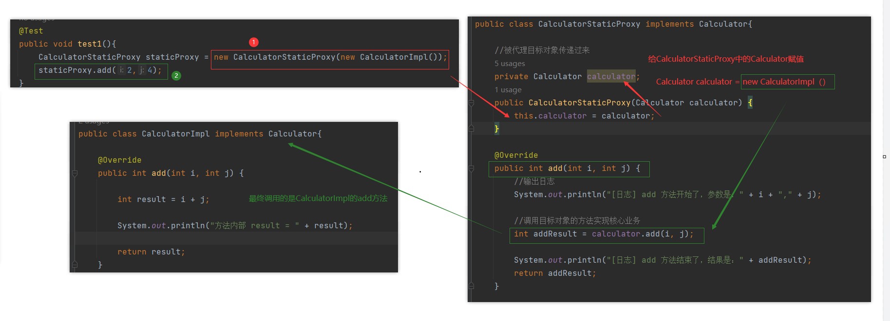
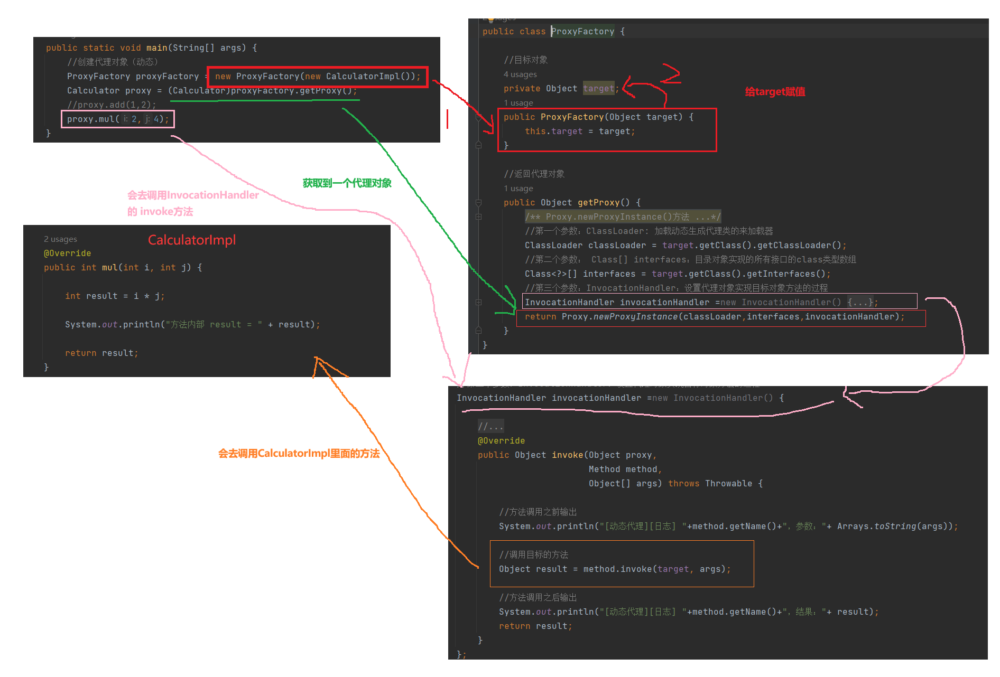

引入问题

需要写一个计算器的接口
public interface Calculator {
int add(int i, int j);
int sub(int i, int j);
int mul(int i, int j);
int div(int i, int j);
}
其实现类不仅要实现相关方法，还需要打印出相关日志
public class CalculatorLogImpl implements Calculator {
@Override
public int add(int i, int j) {
System.out.println("[日志] add 方法开始了，参数是：" + i + "," + j);
int result = i + j;
System.out.println("方法内部 result = " + result);
System.out.println("[日志] add 方法结束了，结果是：" + result);
return result;
}
@Override
public int sub(int i, int j) {
System.out.println("[日志] sub 方法开始了，参数是：" + i + "," + j);
int result = i - j;
System.out.println("方法内部 result = " + result);
System.out.println("[日志] sub 方法结束了，结果是：" + result);
return result;
}
@Override
public int mul(int i, int j) {
System.out.println("[日志] mul 方法开始了，参数是：" + i + "," + j);
int result = i * j;
System.out.println("方法内部 result = " + result);
System.out.println("[日志] mul 方法结束了，结果是：" + result);
return result;
}
@Override
public int div(int i, int j) {
System.out.println("[日志] div 方法开始了，参数是：" + i + "," + j);
int result = i / j;
System.out.println("方法内部 result = " + result);
System.out.println("[日志] div 方法结束了，结果是：" + result);
return result;
}
}
针对带日志功能的实现类，我们发现有如下缺陷：
- 对核心业务功能有干扰，导致程序员在开发核心业务功能时分散了精力
- 附加功能分散在各个业务功能方法中，不利于统一维护
解决思路：
- 解决这两个问题，核心就是：解耦。我们需要把附加功能从业务功能代码中抽取出来。
代理模式
代理模式的作用就是通过提供一个代理类，让我们在调用目标方法的时候，不再是直接对目标方法进行调用，而是通过代理类间接调用。让不属于目标方法核心逻辑的代码从目标方法中剥离出来——解耦。
使用代理前：直接调用目标方法

使用代理后：调用目标方法钱需要进过代理，让代理去使用目标方法

静态代理
创建静态代理对象
public class CalculatorStaticProxy implements Calculator{
//被代理目标对象传递过来
private Calculator calculator;
public CalculatorStaticProxy(Calculator calculator) {
this.calculator = calculator;
}
@Override
public int add(int i, int j) {
//输出日志
System.out.println("[日志] add 方法开始了，参数是：" + i + "," + j);
//调用目标对象的方法实现核心业务
int addResult = calculator.add(i, j);
System.out.println("[日志] add 方法结束了，结果是：" + addResult);
return addResult;
}
@Override
public int sub(int i, int j) {
//输出日志
System.out.println("[日志] sub 方法开始了，参数是：" + i + "," + j);
//调用目标对象的方法实现核心业务
int addResult = calculator.sub(i, j);
System.out.println("[日志] sub 方法结束了，结果是：" + addResult);
return addResult;
}
@Override
public int mul(int i, int j) {
//输出日志
System.out.println("[日志] mul 方法开始了，参数是：" + i + "," + j);
//调用目标对象的方法实现核心业务
int addResult = calculator.mul(i, j);
System.out.println("[日志] mul 方法结束了，结果是：" + addResult);
return addResult;
}
@Override
public int div(int i, int j) {
//输出日志
System.out.println("[日志] div 方法开始了，参数是：" + i + "," + j);
//调用目标对象的方法实现核心业务
int addResult = calculator.div(i, j);
System.out.println("[日志] div 方法结束了，结果是：" + addResult);
return addResult;
}
}
实现类不需要再打印日志了
public class CalculatorImpl implements Calculator{
@Override
public int add(int i, int j) {
int result = i + j;
System.out.println("方法内部 result = " + result);
return result;
}
@Override
public int sub(int i, int j) {
int result = i - j;
System.out.println("方法内部 result = " + result);
return result;
}
@Override
public int mul(int i, int j) {
int result = i * j;
System.out.println("方法内部 result = " + result);
return result;
}
@Override
public int div(int i, int j) {
int result = i / j;
System.out.println("方法内部 result = " + result);
return result;
}
}
测试
@Test
public void test1(){
CalculatorStaticProxy staticProxy = new CalculatorStaticProxy(new CalculatorImpl());
staticProxy.add(2,4);
}
日志：
[日志] add 方法开始了，参数是：2,4
方法内部 result = 6
[日志] add 方法结束了，结果是：6
运行逻辑
问题
静态代理确实实现了解耦，但是由于代码都写死了，完全不具备任何的灵活性。就拿日志功能来说，将来其他地方也需要附加日志，那还得再声明更多个静态代理类，那就产生了大量重复的代码，日志功能还是分散的，没有统一管理。
提出进一步的需求：将日志功能集中到一个代理类中，将来有任何日志需求，都通过这一个代理类来实现。这就需要使用动态代理技术了。
动态代理

生产代理对象的工厂类
public class ProxyFactory {
//目标对象
private Object target;
public ProxyFactory(Object target) {
this.target = target;
}
//返回代理对象
public Object getProxy() {
/**
* Proxy.newProxyInstance()方法
* 有三个参数
* 第一个参数：ClassLoader: 加载动态生成代理类的来加载器
* 第二个参数： Class[] interfaces：目录对象实现的所有接口的class类型数组
* 第三个参数：InvocationHandler：设置代理对象实现目标对象方法的过程
*/
//第一个参数：ClassLoader: 加载动态生成代理类的来加载器
ClassLoader classLoader = target.getClass().getClassLoader();
//第二个参数： Class[] interfaces：目录对象实现的所有接口的class类型数组
Class<?>[] interfaces = target.getClass().getInterfaces();
//第三个参数：InvocationHandler：设置代理对象实现目标对象方法的过程
InvocationHandler invocationHandler =new InvocationHandler() {
//第一个参数：代理对象
//第二个参数：需要重写目标对象的方法
//第三个参数：method方法里面参数
@Override
public Object invoke(Object proxy,
Method method,
Object[] args) throws Throwable {
//方法调用之前输出
System.out.println("[动态代理][日志] "+method.getName()+"，参数："+ Arrays.toString(args));
//调用目标的方法
Object result = method.invoke(target, args);
//方法调用之后输出
System.out.println("[动态代理][日志] "+method.getName()+"，结果："+ result);
return result;
}
};
return Proxy.newProxyInstance(classLoader,interfaces,invocationHandler);
}
}
测试
public static void main(String[] args) {
//创建代理对象（动态）
ProxyFactory proxyFactory = new ProxyFactory(new CalculatorImpl());
Calculator proxy = (Calculator)proxyFactory.getProxy();
//proxy.add(1,2);
proxy.mul(2,4);
}
日志：
[动态代理][日志] mul，参数：[2, 4]
方法内部 result = 8
[动态代理][日志] mul，结果：8
运行逻辑
转载请注明来源，欢迎对文章中的引用来源进行考证，欢迎指出任何有错误或不够清晰的表达。可以在下面评论区评论，也可以邮件至 1909773034@qq.com